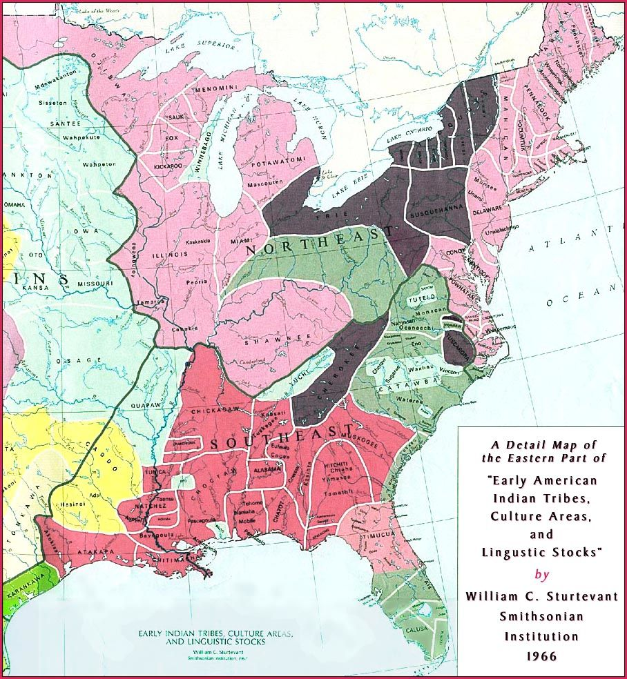
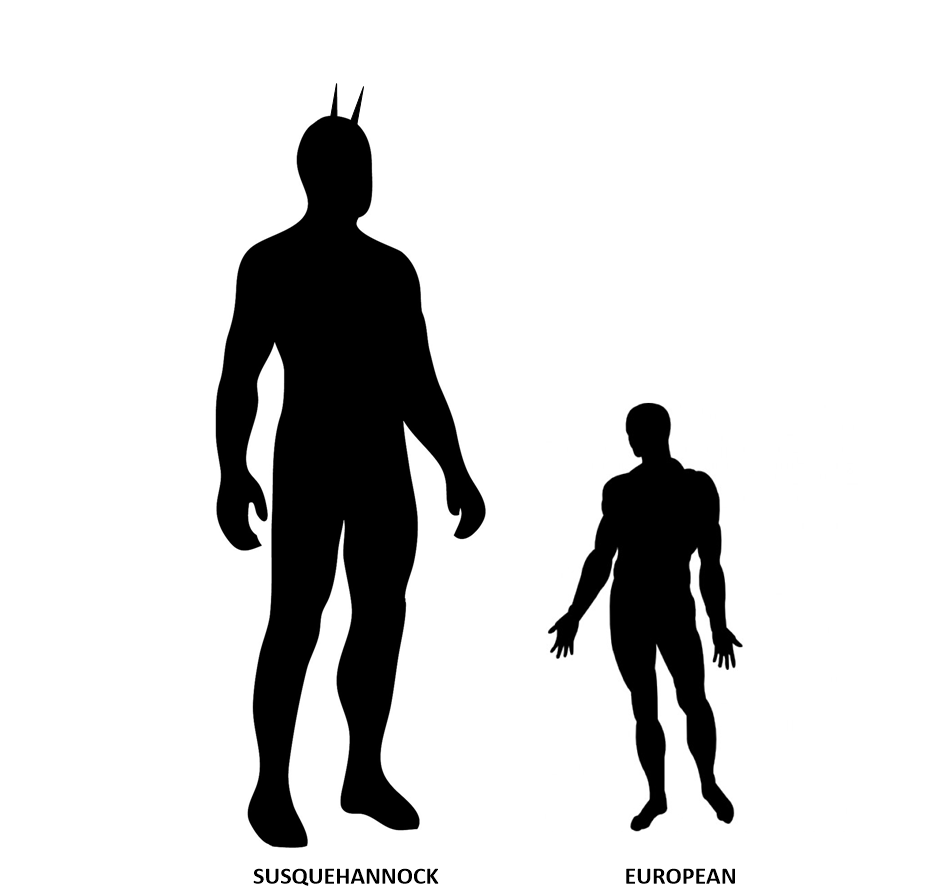
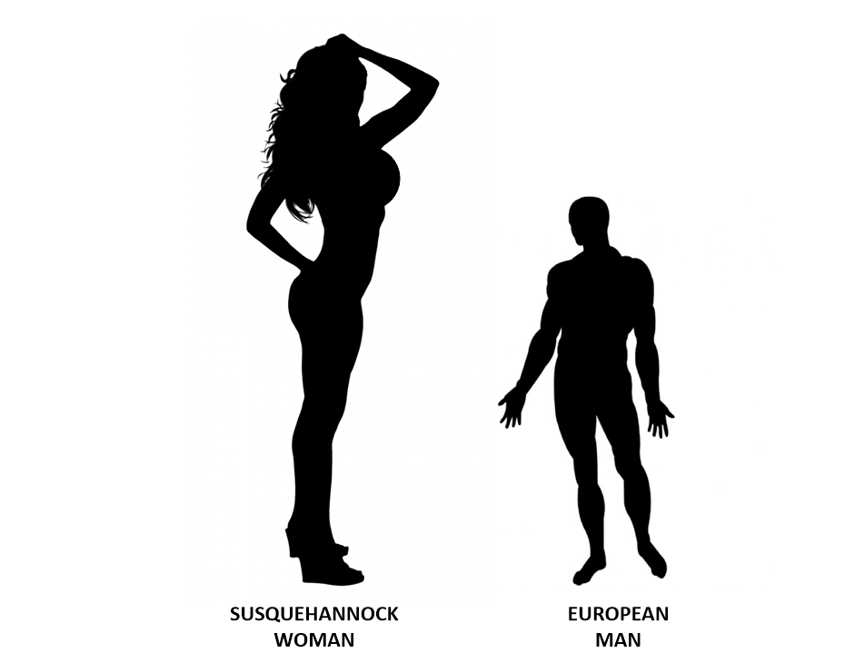
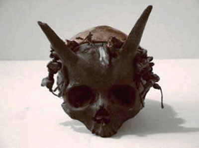
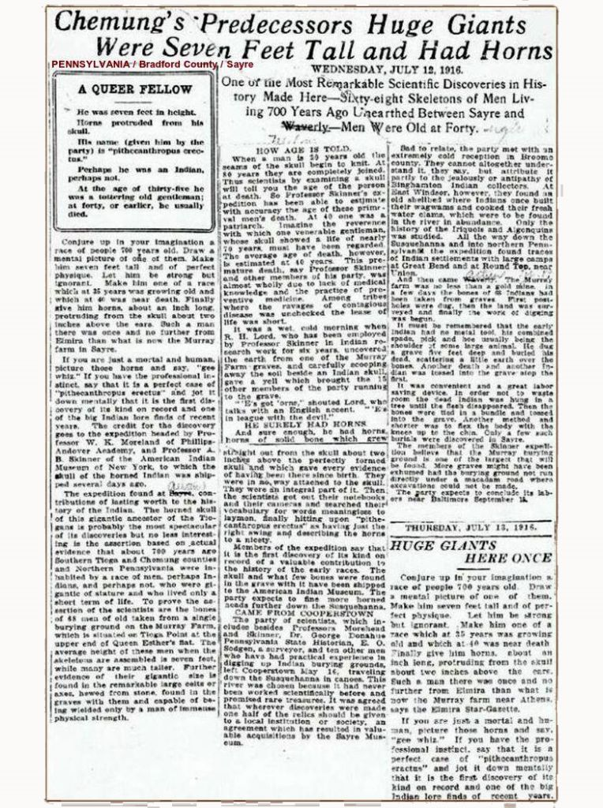

Maybe they actually did. The evidence is certainly suggestive of it. For reasons of my own, I have embraced the concept and idea that there have been creatures from other planets, with other intelligences, and different technologies that have visited our planet. This belief was expanded upon by the books by Erich von Däniken in the 1970’s. Oh, of course there are armies of people that dismiss this belief. I’m unfazed. Everyone can believe what they want in regards to their own realities.
As such…
Given what little I know about reality, I can see some patterns. As such, these patterns are quite interesting. One such pattern is the development of colonies, or remote societies that settle away from the main cluster or home. America was birthed from thirteen colonies that were established by European colonists. Australia was birthed from cantankerous Englishmen. Brazil was birthed from Portuguese colonists. If we humans ever want to leave this little planet that we call our home, and venture elsewhere, we will need to set up colonies on other worlds.
In a like way, if some creatures came from another planet and wanted to move to earth, they would need to set up a colony first. Yet, what would this colony look like? Would it have skyscrapers and color televisions? Would it be peopled with creatures with tentacles and five eyes? Or, would it look something out of the Wild West, with stockades protecting strange and unusual people with technologies that we cannot understand? I would guess the later.
With this in mind, let me introduce the reader to the Andaste Indians (The Susquehannocks)…
Introduction
I would like to begin this discussion with an unusual group of people who used to live in and around Pennsylvania, in the United States. This group of people was known as the Susquehannocks / Andaste Indians.
To begin with, however, we need to understand that this tribe or race of people is now long dead. We only know of them through ancient records. These are the writings of the explorers who ventured into early America and encountered these people. Indeed, what they wrote about was quite amazing and spellbinding.
It was a different time.
As such we need to touch on the time period for a spell. When the Pilgrims were first standing on Plymouth Rock, this race was engaged in aggressive trade. All the local Indians feared them. The king of the Susquehannocks was the Negan of their day. (As an aside, have you ever been to Plymouth Rock? Let me tell you that it was quite a disappointment. It was more like a shallow well, than a rock. But, anyways, the town is quite quaint.)
What American Indians were REALLY Like
Today most American people are unaware of the life of the native inhabitants of America. At best, they have an idea of cone shaped Teepees, and bare chested men on horseback with some feathers in their hair. They might have some “scalps” tied around their waist, and a vest of sticks around their chest. They might sit tall on a white and black spotted horse, and have an attractive “squaw” waiting for them in their Teepee. Hah! Indeed, the truth of the pre-European colonization native life in America is now hidden and secret. It is not really adequately covered in American textbooks.
However it really should be…
During the Middle Ages, plagues ravaged Europe. These plagues were devastating. They killed many people, and in certain communities, most of the inhabitants. Entire towns became empty. A visitor would enter these deserted communities and find horses, chickens and pigs, but all the humans would be dead. It was a devastating time. As such, many people chose not to travel about, but to hide behind walls and seek protections and safety. Europe, during the post plague “dark ages”, was a land not unlike a Hollywood apocalypse.
Instead of a handful of survivors battling it out against zombies in abandoned ghost towns as portrayed in “The Walking Dead” and other apocalyptic movies, the survivors in Europe hid in walled towns, fortresses, and ventured out only when absolutely necessary. They didn’t know what caused the plagues. They thought it was due to their sins and wrong doings.
Of course, today we know the causes as diseases carried by the insects on rats and mice. However, at that time, no one knew the causes.
While Europe was beginning to rebuild, the survivors of the plague started their life anew. They did not realize that they had grown immunities to many of the (associative) sicknesses and illnesses that ravaged the European countryside. Then, later when they began to set sail for foreign lands and search for new lands and new beginnings, they carried the plagues and sickness that they were immune to.
When the explorers first arrived in “the new world” they were astounded by what they found. It was not as many contemporaneous Americans assume; a heavily wooded land with sparse communities located here and there in the mist of untouched natural beauty. It was not like that at all. For instance, a sailor named Giovanni da Verrazzano sailed up the East Coast and described it as “densely populated” and so “smoky with Indian bonfires” that you could smell them burning hundreds of miles out at sea. America was densely populated.
These were not the primitive savages as portrayed by Hollywood; no matter no noble, they portray them.
American Indians were Civilized
The Indians lived in wood homes, with good solid wood floors. They lived in both log and bark houses. Some even created stone buildings, many of which are still mysterious and have no discernable purpose. They created huge networks of stonewalls. This was true not only in New England, but in California as well. They were (and are) all over North America. (Don’t buy into the simpleton narrative that they were built by early American colonists. The walls do not match the land ownership and titles at that time.) The native Indians had a developed and active commerce that involved trade all through the Americas. They used the various rivers to move about and trade.
I know that there are those who find common everyday answers to the stone ruins that existed prior to the European arrival. They say the Warwick tower was a windmill, and such. Has the reader actually been there and looked at it? Well, if it was a windmill, it must have been a really tiny one.
About this “mystery”…
Why set up a windmill when a nearby river (the most common place to grind grain) was nearby. Streams are far more reliable as a motive source. Winds are periodic. Thus, steams are better places to locate gristmill facilities. Especially as they are a “mature technology” and financial viable. The only reason that windmills are used in the Netherlands is that constant free flowing water under a head was not available. Think people. Think!
Remember, boys and girls, things must have a purpose and a reason for being made. Stones are heavy. It takes time, requires people and funds to make.
Then, if it is a business, it needs to have customers and records. This is from Colonial times, for Pete’s sake. If you want to prove that, a tower is grain-grinding windmill, then show who owned the land, who built the structure, the commerce that derived from it, the customers involved.
As is true throughout the Internet today, and in general culture (though that is an argument for another day), people posit the most ridiculous things. They get away with it, because “everyone knows” that is the most “logical” answer. That must be, you know, because native American Indians were “savages”.
Don’t you know…
All of this is certainly a far cry from what many Americans have been led to believe.
America was the Home of Many Nations
So when the first explorers from Europe entered North America they entered a very well established and ordered society. America was the home of many Indian nations. These nations were just as valid as any European nation. They were not primitive but large, with their own distinct cultures and societies. As the first explorers ventured forth, they brought many things with them. One of which was the plagues and sicknesses that previously ravished Europe.
The first explorers, without even trying, set in motion a biological apocalypse. It In the decades between Columbus’ discovery of America and the Mayflower landing at Plymouth Rock, the most devastating plague in human history raced up and down the Eastern Coast of America. It was horrific. It devastated entire communities, Indian nations, and cultures.
So, by the time the first thirteen colonies were getting established, they moved about in the immediate aftermath of a full-blown biological apocalypse. Reports suggest that a mere two years before the pilgrims landed on Plymouth Rock, the plague wiped out about 96 percent of all the Indians in Massachusetts.
The Plague
There are very few reports of what it must have been like. Within a period of years, the deaths of significant numbers of the population must have been horrific. One can well imagine the shock and horror that it must have gripped the native inhabitants. As diseases such as smallpox covered everyone from head to toe with painful pustules, and the survivors fearful of contact with others who might be affected by this scourge, the environment must have been very tense. We can only guess the fearful respect that the local Indians would have for these new strangers that suddenly appeared out of nowhere.
Using your history books to understand what America was like in the 100 years after Columbus landed there is nearly impossible. This is a history that was never taught. It’s like trying to understand what modern day Manhattan is like based on the post-apocalyptic scenes from “I Am Legend”.
Historians estimate that before the plague, America’s population was anywhere between 20 and 100 million (Europe’s at the time was 70 million). The plague would eventually sweep West, killing at least 90 percent of the native population. For comparison’s sake, the Black Plague killed off between 30 and 60 percent of Europe’s population.
History and Historians
There are always reasons why history is not reported accurately. Sometimes it’s because the knowledge is lost and filled in by later historians with their own personal biases. However, it is mostly because the government, which creates your “free education”, actually has an objective that they wish to enforce through a historical narrative.
In fact, many historians believe that the pre-colonization plague was the single most important event in American history. But, you know, it’s just a little more fun to believe that your ancestors won the land by being the superior culture. (History is always written to persuade and manipulate.)
Actually, the European settlers had a hard enough time defeating the remaining stragglers of the once huge Native American population. The survivors must have been some seriously hardy people. The closest thing that I can picture is a scene out of one of the “Mad Max” movies. You need to remember that the American Indians did not mess around. When the Vikings tried to explore North America they got their collective hides handed to them on a platter. Those few that managed to escape the fury of the natives, never returned back.
Within the devastated countryside lay many proud Indians. The lone survivors were something both amazing and frightening at the same time.
At the time of the colonization of North America and the thirteen colonies, the European settlers started to meet and interact with the native Indians. Those they met were a hardy bunch indeed, but terribly weak after their society collapsed. One such group that they met was a society of unique natives located in Northern Pennsylvania.
The Andaste Indians (Susquehannocks)
This group is a former American-Indian tribe located in North Central Pennsylvania. (The French called them Andastes.) They no longer exist. All members of the tribe were exterminated through armed conflict approximately 400 years ago. As far as I know, they neither bred with the neighboring indigenous Indian tribes nor inter-married with any of the European colonists whom encroached onto their claimed territories. They were an isolated community surrounded by other Indian communities that they traded with, but would not breed with.
The name Susquehannock is derived from the word Sasquesahanough. It is a descriptive term used by Captain John Smith’s Algonquian interpreter (in 1608) to mean “People at the Falls”, or alternatively as the “People of the Muddy River”. (Which might be suggestive of the name “The people from Niagra Falls”.) Two other names that were used to refer to them were “Andaste” (particularly by the French) or “Minqua,” “Minques,” or “Minckas” by the Dutch. Additionally, there seems to be many other names used as well.
Indians in Pennsylvania
Most people haven’t a clue as to what American Indians are. When most people think of the Native Americans that lived in the Pennsylvania and New York regions they usually think of the Iroquois. However, the most fundamental truth is that the Iroquois didn’t live in this region. Well, that is, not until relatively recently.
Specifically, the Susquehannocks lived in the Pennsylvania region for around 15,000 years. That is one long stretch of time. Around 1400AD the Iroquois started to show up. It would take them a couple of centuries before they set up settlements. They started to live in the region, and battle with the Susquehannocks, about the same time that the Europeans started to arrive.
The entire Middle to Eastern Pennsylvania and the bulk of Southern New York area was fully controlled by the Susquehannocks. They were a huge, powerful and frightening people. To put this into perspective, the dangerous and fierce Iroquois Indians are said to fear only one people; the Susquehannocks. Many accounts say they were very warlike. Not one report says otherwise.
Records and evidences support the notion that they were much larger than average people were. We have historic records that show that they were responsible for winning many battles against the Iroquois and wiping out many smaller Native American groups along the Susquehanna. They were ruthless. They were the Khmer Rouge of their day.
This race of fierce and terrifying Indians had full control of the entire region and they controlled it with an “iron fist”. In fact, they didn’t give up control of their territory to the Iroquois until the late 1600’s. This was about the same time as the Americas were devastated by European transported illnesses. It is my guess that the Iroquois leveraged biological warefare to their advantage.
An Extraterrestrial Colony?
So what? There were just a bunch of Indian savages that eventually were subdued by the superiority of the European settlers. Right?
This particular article is an investigation into the REMOTE possibility that the Susquehannocks might be the remains of a colony of extraterrestrials. (Here we discuss the possibility, and why it could be. Not that it is. So there shouldn’t be any reason for “knee-Jerk” scientific statist responses.)
These individuals can be considered a typical embodiment of what an extraterrestrial humanoid colony would look and behave like. We have named them as “American Indians”, but they did not act, look like, or behave like any other Indians elsewhere in the Americas. They stood unique. This is both physically and figuratively.
From my own personal point of view, I hold this belief upon the known information that I have on them. Consider the curious circumstances surrounding them. They were [1] totally unique; they stand apart in culture, behavior and appearance in the region, and they had [2] various skills and abilities that were noteworthy in themselves. Their [3] physical appearance was different, and they maintained [4] technological skills that were different from that of the surrounding region.
Characteristics of the Andaste
Therefore, of all the examples that I provide herein, perhaps one of the most interesting was that of the characteristics of Andaste Indians. I found them fascinating due to their physical appearance, plus the fact that I once visited a museum that displayed some of their skulls, which made an impression on me in my youth. I was 13 at the time, and travelling with my father. He was doing engineering sales and was driving though the Pennsylvania countryside visiting factories and companies all over the territory. I went along for the ride. Sometimes he would pull over and we would visit an obscure museum or park, way off the “beaten track” in the hinterlands.
"Of many points of historic interest in our valley, perhaps none has attracted more attention or roused more speculation, from the earliest times to the present, than the mound called Spanish Hill. This prominence is due not only to its unusual position (isolated from the hill ranges and regions), but also to its odd outline, the remains of fortifications on the top, and its present name." - Louise Welles Murray -"History of Old Tioga Point and Early Athens -"1908.
Today, if you look up this subject on the Internet you will find very little information. It is, alas the case with most studies of American Indian archeology. For most Americans, the study of Americans is one of arrowheads, animal-hide teepees, and a hand-full of dirt mounds and stories of the Wild West.
This is unfortunate, because prior to the invasion of the Europeans in the 1500’s, North America was a thriving and heavily populated region divided into many nations, all of which were engaged in trade, wars and the various aspects of civilization. Few actually lived in tents. Most lived in large log houses, with wood floors, doors, furniture and stone fences. They traveled the world on worn paths and by river travel using well-made boats. They maintained a large and complex intercontinental trading arrangement and had mastered regional herbal medicines and localized agriculture.
In the Americas were numerous Indian nations, and within these nations were federations of tribes and sub-cultures. Many had similarities but often they were peppered with unique cultural and societal customs and behaviors. Yet, there were more than a few surprisingly isolated and biologically unique “Indians” who were part of these nations, but remained aloof from them.
These are the kinds of potential extraterrestrial colonies that I would like to investigate.
History is being Forgotten
At one time there was quite a bit of information about this “Indian Tribe” known as the Andaste. But time, the lack of interest, and the lack of funding have resulted in the dissemination of many of the relics of this colony. What remains is but a precious few items. When one searches for tangible information on this race, one is confronted with an amazing slew of disbelief and incredulity. It is typically discounted off hand by the ignorant. It’s a photoshop hoax they pontificate. It’s all nonsense, they argue. It just possible cannot be true.
For the record, this is neither a hoax, a fabrication based on a single specimen (Over 80+ skeletons have been found of this race. They all confirm the size, facial structure and (yes) horns as described herein.), or a wild outlandish story. The race did exist. They had their capital in the Bradford area for a very long time; over fifteen centuries, and (I suggest that) they did originally settle in the area (possibly) from an extraterrestrial location.
“After very careful study of all accessible facts, I unhesitatingly commit myself to the conclusion that Spanish Hill is nothing more or less than this ancient fortified town, the stronghold of the Carantouans" -John S. Clark
Their Nation
The Indians had nations. These were identical to the nations of Europe. They possessed armies, borders, society and a form of taxation on the various communities within the nation.

The first historic records by Europeans indicate that the Susquehannocks were a nation made up of several villages. These communities ruled a large area that included parts of present day New York, and Eastern Pennsylvania. Researchers claim that the Susquehannocks were made up of 5 to 6 principal tribes. These tribes were spread out and divided amongst approximately 20 villages along the Susquehanna river.
As an amateur, I personally find it hard to understand what a “tribe” is relative to an “Indian nation”. I am sure, than an expert in these historical matters could explain much better than I ever could. As far as I have been able to make out, a “tribe” is a collection of similar people that occupies a regional area. To best understand this arrangement, the reader should consider a “tribe” as a state. Just like the original colonies were comprised of thirteen colonies that eventually became states, these tribes can be considered as individual states within the nation of Carantouan. Thus, the nation was divided into five or six states, or sub-regions.
The extent of this nation was unknown until a surveyor from the European colony at Auburn NY, by the name of General John S. Clark mapped out their communities. He determined that their most Northerly village was Carantouan (Spanish Hill). He determined that they were the people of the nation of Carantouan . The first European explorer to visit this site was Etienne Brule in 1615.
Physical Dimensions
“In 1822, while digging a cellar on the farm of General McKean, excavations came to what was supposed to be "an impenetrable rock, but striking it with a crow bar it gave forth a hollow sound." They re-doubled their efforts, and at last the stone broke and fell into a vault. And now, with visions of long-buried treasure flitting through their minds, they carefully removed the earth from the arch, speculating the wile as to the probable extent of the "treasure-trove," and the amount of salvage the General would be likely to claim. On removing the cap they found "not what they sought," but a sepulchre. A careful examination of the sarcophagus reveled it flagged at the bottom, the sides artistically built up, and a flat stone laid on the top. The sarcophagus measured nine feet in length, two and a half feet in width, and ten feet deep. In it was found a skeleton measuring as it lay, eight feet and two inches in length. The teeth were sound, but the bones were soft and easily broken. There were ten of these sepulchres within the space of the cellar, one of which had a pine growing over it three feet in diameter.” -Source: BRADFORD REPORTER, Towanda, Pennsylvania Aug 14, 1884 - article on Burlington Township.
The first thing that sets this tribe apart from the other tribes in the area was the physical appearance of the members in the community. They did not act, look or behave like any of the Indians associated in that region. Not only was their [1] physical appearance different, but [2] they dressed uniquely and acted differently, as [3] well as spoke a completely different language.
Tall Beings with Horns
These individuals were very tall humanoids with males uniformly standing over seven feet tall. In fact, many males often reached heights of 8 to even 9 feet tall. This is amazing when one considers that most local Indians and European explorers stood around 5 feet tall. To put this into perspective, the reader must realize that these individuals were almost twice the size of the people surrounding them.
Not only that, but all the males had horns. That is right; they had horns! The horns were proportionally and genetically disposed to grow out of the upper forehead region in a set of two distinct and prominent horns. These were not one-inch long stubs, but rather 5 to 9 inch long protuberances! They were shaped like very long and thick goat horns!
Furthermore, these were not coincidentally abnormally tall and thin men either. They were husky, fully proportioned men of significant girth and strength. Records from that period described them as “impressive”, “awesome” and “breathtaking” in appearance.
As if that wasn’t enough, however, the fact that their skin color was a decidedly reddish color (Their skin was not a dark reddish-brown like the Iroquois, but a decidedly different color.) would make most anyone go into shock. Imagine the sight of bright red giants with horns that were twice your size. They were indeed a most noteworthy race.
Age
There are reports that suggest that the race was not a long-lived one. Adolescence came early, and so did death. By all accounts very few of the race lived past 40 years. This is odd, as all humans have the potential to live up to their early 100’s. This race was considered to be lucky if it lived to 50 years.

At the time of the apparent height of the Andaste culture, the local Indians stood a mere 4.5 to 5 feet tall, and the Andaste Indians stood between seven and eight foot all. This has been confirmed by the excavation of their remains and substantiated the local Indian legends.
Think about that for a minute.
That would be around at least two feet taller than any “normal” man at the time. And it would still be considered to be HUGE by our contemporaneous standards today. After all, the supremely tall Shaquille O’Neal is only 7 feet 1 inch, and weighs 315 lbs. These people were taller, and much heavier. Oh, and did I mention that the men all had horns?
Women and Children
It is curious that none of the females, or the children had horns. While all were of gigantic size and proportions, the females were of smaller stature than the males. And, of course the children began as a normal infant and grew into manhood through a normal growth development curve. As such, we can imply that the adolescent males grew horns in their teens and the horns were in some way associated with the attainment of manhood.
Everyone, including the females had a distinctly strong reddish pigmentation to the skin. Depictions of them show a hairless body with long flowing head hair, but we do not know if this was genetic or cultural. None of the descriptions includes beards or other kinds of facial hair.
". . . 60 of those Susquehannocks came to us . . . such great and well-proportioned men are seldom seen, for they seemed like giants to the English . . .these are the strangest people of all those countries both in language and attire; for their language it may well beseeme their proportions, sounding from them as a voice in a vault. Their attire is the skins of bears and wolves, some have cassocks made of bears heads and skins . . . The half sleeves coming to the elbows were the heads of bears and the arms through the open mouth . . . one had the head of a wolf hanging from a chain for a jewel . . . with a club suitable to his greatness sufficient to beat out ones brains. Five of their chief wereowances came aboard us . . . (of) the greatest of them his hair, the one side was long and the other shorn close with a ridge over his crown like a cocks combed . . . The calf of whose leg was half a yard around and all the rest of his limbs so answerable to that proportion that he seemed the goodliest man we ever beheld!" -Voyages of CAPTAIN JOHN SMITH (of Jamestown, Va.) during the Years 1607-9.
There is no doubt in my mind that after reading numerous accounts of these gigantic skeletons being found throughout this area, that this is not a mere “legend,” it is a fact. These Susquehannocks (Andaste) were GIANTS especially to the men of average height (4- 5.3 feet) of that time period, but also seemed “huge” to the people who dug them up over the past 100 years. The Andaste’s AVERAGE height seems to be between 6 and 7 feet, with some exceptional human specimens being recorded to be about 8+ feet in height.

Trade and Commerce
They were terribly warline, but they DID maintain trade relations with their neighbors. They were clever and known to be shrewd traders and businessmen. Their single and lone colony occupied a fortified bluff or small (natural) hill (This hill was very unique as it had nearly vertical harsh cliff sides and a very flat “tabletop” apex.) with steep sides that overlooked the convergence of two rivers. Both rivers, by the way, were major trade arteries for the local Indians in that region. (Rivers, prior to the expansion of the American colonies, were the major trade, communication and travel routes. They were the highways of that time period.)
We do not know much about the trade agreements that they had with other races in the region because that information has been lost through the passage of time. However, the local legends of the nearby Indian tribes suggest that this nation consisted of individuals who were extremely shrewd businessmen and would engage in commerce in a very strict and formal way. They would always warn that those engaging in business dealings must first make sure that they knew exactly what kind of agreement that they were getting into. As there would be “most terrible” consequences if the agreement was not followed exactly “to the letter”.
The Only Known Colony
Instead of thinking of the Susquehannock “Indian Nation”, for our purposes let’s consider them an extraterrestrial colony. As such, their only known existent colony was in the United States.
The capital complex was located in what is now Bradford County located in north-central Pennsylvania near the New York state line. This colony was located near the town of Sayre, which is at the intersection of two rivers; Chemung river and the Susquehanna river. Because of that, they are sometimes referred to as the “Sayre Giants”. This colony was located on a lone hill with steep sides and a very flat top that overlooked the river.
Today, Sayre is a pretty small town located in the Pennsylvania countryside.
Over time, 15,000 years to be frank, they set up colonies “down river”. These colonies were similar to the main Bradford site. These people were all giants. However the presence of horns on top of the heads apparently are limited to the Bradford area. Culturally they all shared a common culture.

Andaste skull unearthed in Bradford Pennsylvania. (Image source.)
The Andaste Indian males all had horns, while the children and the women did not. The horns started to develop during adolescence in young boys when they began to reach maturity. The horns were all uniform and grew out of the upper forehead approximately at the hairline.
Proportionally the horn length varied from individual to individual but was typically at least 6 inches long. Horn diameter also varied considerably with diameters at the base of the horns varying from one to two and a half inches in diameter. Excavated remains suggest that the horns would sometimes be damaged and would break off, suggestive of combat of some type. (Maybe. Maybe…)
A Fortified Community
This “Indian Tribe” occupied a fortified hill strategically placed nearby, which was once, a major intersection of Indian trade routes. They had no other villages or settlements. There were no other similarly sized or culturally similar races nearby. They were unique and occupied a lone fortified hill.
The fortification; “Onnontioga” (Tioga Point) is located where the Susquehanna River and the Chemung river join. The hill was renamed “Spanish Hill” by the European settlers to the region. The name referred to the shape and style of the fortifications and ramparts at the hill. They were decidedly different than any of the other local Indian ramparts. These were more reminiscent in appearance to those associated with known Spanish fortifications. Early explorers to that region remarked how impressive and advanced the fortifications were.
This is a significant point. The Onnontioga fortifications were substantially more advanced, technologically engineered, and superior to locally manufactured Indian fortifications; some could argue that it was equal to the superiority of Spanish fortifications of the time.
Other Colonies
Were there other colonies of these people elsewhere in Pennsylvania? No. Apparently they were a unique and isolated group. That stands apart as significant, and is worthy of discussion.
There are legends of these creatures all over the globe. Much of the folklore about the red devil with horns, and the signing of contracts (could possibly) indirectly originate from these people. When one comes across the legend of a huge people with horned skulls, red skin and who were very shrewd in business, one must consider the possibility of interaction with this race.
If true, then it has become obvious that they have tried to set up other colonies on the earth over the last 10,000 years, with the colony at Sayre being the longest lasting one. But none of their other colonies ever seemed to stabilize. Eventually they all died out, or were assimilated with the indigenous peoples. Apparently, if true, they had established colonies in other places as well to include Western Russia, and of course the Americas.

Weapons
There is indisputable evidence that the Sayre race that lived here were not simply tall, horned, red skinned humanoids. They had access to firearms as well! One must keep in mind that these reports come from the year 1500. At that time the export of gunpowder from China had just then reached Europe. Its use was just beginning to displace that of the crossbow and long sword. The Europeans were just getting their first exposure to the precursors of modern firearms, so one must truly imagine their surprise when they encountered enormous red horned giants with rifles!
"There is, however, undisputed evidence from the earliest settlers (Shepards, Hannas, and others) that when they came the Indians remaining in this locality… …stood in awe of the hill, and avoided ascending it" "Early in the last century, Alpheus Harris settled at the foot of the hill. An old Indian was a frequent visitor, but when asked to ascend the hill he always refused, saying a Great Spirit lived there who would kill Indians. That he spoke with a thunderous voice and made holes through Indians bodies. This suggests muskets or cannons" - Louise Welles Murray 1908:62, 64
We also have reports that some of their weapons were quite large. These larger weapons were considered to be cannons (!) by the European settlers to the region.
"Lalemant now describes the warfare which had continued between Canadian and other tribes and the Iroquois. The latter attack the Andastes, far down the Susquehanna, but find that the villages of this tribe are defended with European cannon; and, moreover, the Andastes are a match for them in cunning — seizing twenty-five Iroquois spies, and burning them to death in the sight of their own army. Not only do the invaders meet disaster, but their own villages are ravaged by smallpox, and their fields remain half tilled. Thus menaced, the Iroquois plan to form an alliance with the French, hoping that the latter may help them against their enemies; but they abandon this scheme, upon hearing that the king of France is about to send many soldiers to Canada, to crush the enemies of the colonists. Meanwhile, some souls among them are saved; for certain captive Frenchmen baptize over three hundred children, and some adults who are dangerously ill." -The Jesuit Relations and Allied Documents Volume 48
The Colony Layout
"The fortifications of all this family of tribes were, like their dwellings, in essential points alike. [1] A situation was chosen favorable to defence, the bank of a lake, the crown of a difficult hill, or a high point of land in the fork of confluent rivers. [2] A ditch, several feet deep, was dug around the village, and the earth thrown up on the inside. [3] Trees were then felled by an alternate process of burning and hacking the burnt part with stone hatchets, and by similar means were cut into lengths to form palisades. These were planted on the embankment, in one, two, three, or four concentric rows, those of each row inclining towards those of the other rows until they intersected. [4] The whole was lined within, to the height of a man, with heavy sheets of bark; and at the top, where the palisades crossed, was a gallery of timber for the defenders, together with wooden gutters, by which streams of water could be poured down on fires kindled by the enemy. [5] Magazines of stones, and rude ladders for mounting the rampart, completed the provision for defence. The forts of the Iroquois were stronger and more elaborate than those of the Hurons; and to this day large districts in New York are marked with frequent remains of their ditches and embankments." -Francis Parkman, "The Jesuits in North America in the Seventeenth Century". Edited for readability with the addition of numbered points.
The tribe lived within a Fortified Village or Citadel.
Inside the walled complex was a geometric array of housings and facilities. It was surrounded by reinforced ramparts of wood and dirt ditches. The various houses were strategically spaced apart and away from the ramparts. All the houses were of bound live wood. (Tolkien elf style.) The interiors were of log construction with multi-tiered wooden floors. Though the building system was different than contemporaneous European methods, it was not inferior. They used bark over live saplings instead of cut and processed logs. Which is much like how traditional homes are constructed in Japan and throughout Europe. It was a superior system for as the settlement aged, the houses became older and stronger. As the early saplings grew into large mature trees.
The houses were aligned in an orderly geometric arrangement suggestive of a military garrison. A comparison of ancient Viking settlements and their longhouses show a distinct similarity. (I wonder if this was a characteristic of warlike peoples…)
Because of its size, shape, and location, Spanish Hill has been believed to be an excellent location for a defensive stand for an attack. Thus, in defense of my proposed narrative, would naturally have been used by early civilizations for mere survival. It also has a view of many miles in each direction around it because it stands alone on the flat land surrounding it. For this reason, many believe that Spanish Hill was either a Susquehannock village site or site of refuge during attacks during at least the 1500’s and 1600’s. Evidences of campfires, and village remains have been located on the hill to include “hardened fortifications” which also support this school of thought.
There is no question that there were stockades built around the top of this hill (fortifications) around the 1600’s, and a moat or ditch was built around the bottom. It is known that some Indian villages had two or three levels of stockades built around them, and this hill may have had more than one as well. I have also been told by several historians that were involved in “excavation digs” on the hill that there was a covered stockade area going vertically down the hill on the west side to a natural spring that was about 1/2 down the side from the top. This meant that the entire fort had access to clear and fresh spring water, and did not depend on the nearby rivers for drinking water at all.
Living Arrangements
What we know of how they lived is through documented records and journals.
"They covered a space of from one to ten acres, the dwellings clustering together with little or no pretension to order. In general, these singular structures were about thirty or thirty-five feet in length, breadth, and height; but many were much larger, and a few were of prodigious length. In some of the villages there were dwellings two hundred and forty feet long, though in breadth and height they did not much exceed the others. - Brebeuf, Relation des Hurons, 1635, 31.
In comparison, their homes were quite large. They were far larger than any homes made by the European settlers to the region. They were larger than the impressive public and religious structures in Europe at the time.
“Champlain says that he saw them, in 1615, more than thirty fathoms long; while Vanderdonck reports the length, from actual measurement, of an Iroquois house, at a hundred and eighty yards, or five hundred and forty feet!” To put this in perspective, an American football field is 360 feet long (120 yards long). Thus, an actual measurement of an existing Andaste house was much longer than a football field. This is an enormous size, and was most especially impressive in that it was constructed by using live trees interlaced with each other and covered in an array of bark. “In shape they were much like an arbor overarching a garden-walk. Their frame was of tall and strong saplings, planted in a double row to form the two sides of the house, bent till they met, and lashed together at the top. To these other poles were bound transversely, and the whole was covered with large sheets of the bark of the oak, elm, spruce, or white cedar, overlapping like the shingles of a roof, upon which, for their better security, split poles were made fast with cords of linden bark. At the crown of the arch, along the entire length of the house, an opening a foot wide was left for the admission of light and the escape of smoke. At each end was a close porch of similar construction; and here were stowed casks of bark, filled with smoked fish, Indian corn, and other stores not liable to injury from frost. Within, on both sides, were wide scaffolds, four feet from the floor, and extending the entire length of the house, like the seats of a colossal omnibus.” - Francis Parkman, "The Jesuits in North America in the Seventeenth Century"
This differs from other native American Indians. Often, especially among the Iroquois, the internal arrangement was quite different. The scaffolds or platforms were raised only a foot from the earthen floor, and were only twelve or thirteen feet long, with intervening spaces, where the occupants stored their family provisions and other articles. Typically, five or six feet above were yet another platform, often occupied by children.
One pair of platforms sufficed for each family, and here during summer they slept pell-mell, in the clothes they wore by day, and without pillows. But the Susquehannocks were different. (The platforms) “These were formed of thick sheets of bark, supported by posts and transverse poles, and covered with mats and skins. Here, in summer, was the sleeping place of the inmates, and the space beneath served for storage of their firewood. The fires were on the ground, in a line down the middle of the house. Each fire sufficed for two families, who, in winter, slept closely packed around them. Above, just under the vaulted roof, were a great number of poles, like the perches of a hen-roost, and here were suspended weapons, clothing, skins, and ornaments. Here, too, in harvest time, the squaws hung the ears of unshelled corn, till the rude abode, through all its length, seemed decked with a golden tapestry. In general, however, its only lining was a thick coating of soot from the smoke of fires with neither draught, chimney, nor window. So pungent was the smoke, that it produced inflammation of the eyes, attended in old age with frequent blindness. Another annoyance was the fleas; and a third, the unbridled and unruly children. Privacy there was none. The house was one chamber, sometimes lodging more than twenty families." -Francis Parkman, "The Jesuits in North America in the Seventeenth Century"
Social Structure
The Susquehannocks seemed to follow, a more or less conventional Native American Indian social structure, as far as I can tell. Yet, the reader must be made aware, the reports on this are few and far between. They naturally reflect the biases of the reporter of that time.
"In the organization of the savage communities of the continent, one feature, more or less conspicuous, continually appears. Each nation or tribe to adopt the names by which these communities are usually known is subdivided into several clans. These clans are not locally separate, but are mingled throughout the nation. All the members of each clan are, or are assumed to be, intimately joined in consanguinity. Hence it is held an abomination for two persons of the same clan to intermarry; and hence, again, it follows that every family must contain members of at least two clans. Each clan has its name, as the clan of the Hawk, of the Wolf, or of the Tortoise; and each has for its emblem the figure of the beast, bird, reptile, plant, or other object, from which its name is derived. This emblem, called totem by the Algonquins, is often tattooed on the clansman's body, or rudely painted over the entrance of his lodge. The child belongs, in most cases, to the clan, not of the father, but of the mother. In other words, descent, not of the totem alone, but of all rank, titles, and possessions, is through the female. The son of a chief can never be a chief by hereditary title, though he may become so by force of personal influence or achievement. Neither can he inherit from his father so much as a tobacco-pipe. All possessions alike pass of right to the brothers of the chief, or to the sons of his sisters, since these are all sprung from a common mother. This rule of descent was noticed by Champlain among the Hurons in 1615. That excellent observer refers it to an origin which is doubtless its true one. The child may not be the son of his reputed father, but must be the son of his mother, a consideration of more than ordinary force in an Indian community." -Francis Parkman, "The Jesuits in North America in the Seventeenth Century"
Opinions of the European Settlers to the area
The earliest “locals” referred to the remains of fortifications as “Spanish Ramparts” and it is said that the Indians in this area would not go up on to the hill because there was something that made a thunderous noise and made holes in those that dared to climb the hill.
The earliest description known is that of Duke Rochefoucault de Liancourt, a French Traveler in 1795, who, while enroute to the tow of Niagara, saw the hill and thus wrote of it:
"Near the confines of Pennsylvania a mountain rises from the bank of the river Tioga (Chemung) in the shape of a sugar loaf upon which are seen the remains of some entrenchments. These the inhabitants call the Spanish Ramparts, but I rather judge them to have been thrown up against the Indians in the time of M. de Nonville. One perpendicular breastwork is yet remaining which, though covered with grass and bushes, plainly indicates that a parapet and a ditch have been constructed here." -La Rochefoucald-Liancourt 1795:76-7
The End of the Colony
The colony eventually died out in sometime in the mid 1750’s. (Mr.La Rochefoucald-Liancourt reported that ruins, devoid of inhabitants, were still visible standing on top of the hill in 1795.) It exactly coincided with the encroachment of European settlers to the region. Obviously, many of the inhabitants were killed by the European settlers, either directly or through transmitted diseases. As are all records from that time, secretive combative activities were never recorded. So no one knows their true fate. What we do know is that the colony completely died at exactly the same time as the European settlers moved into the region. One must logically assume that the community died out as a direct consequence of the European advancement into that area.
Why consider them Extraterrestrial?
The point of this discourse is to consider them to be an expert example of what a true and real extraterrestrial colony would look like.
Whether they actually are, however, is speculative. I, myself, consider it to be speculative, and the reader should as well. We must not underestimate the creativity and uniqueness of diverse peoples and humans of various backgrounds. Just because they are different does not automatically imply that they are extraterrestrially derived. But, at the same token, they indeed could be.
Why even bother with this kind of consideration?
For this work, I wish to introduce the possibility that they were but an extraterrestrial colony of expats. Of which their home world is unknown. Indeed, if true; it is not known where they came from. Their genetic makeup was odd and unusual. Thus, they could have entirely been members of an extraterrestrial colony that was established on the Earth in numerous locations globally.
Or not.
After all, simply because they look different than “normal” humans do not make them extraterrestrial. There are many regional variations of humans. Look at the comparative differences from that of an inhabitant of Zambia to one of Norway. But nowhere is the genetic variances so pronounced, and so isolated. That in itself should signify that there is something significantly odd about them. This oddness should be considered and investigated.
The Reasoning
Consider this reasoning. Any extraterrestrial colony to a planet that hosts “native” humanoid bipedal entities would stand out as different. There would be a number of obvious tell-tale signs and indicators of this.
For instance, they would be [1] physically different from the local races. Their size might be different, their skin color or hair color might be different. [2] They might speak a different language or have a different set of sounds that they would make. [3] They might possess technologies or do things using different techniques than those in the surrounding regions. [4] They might create fortifications and structures designed to protect them from others because they would be so different. [5] Finally, they might interact with the surrounding local natives in ways suggestive of trade, or collaborative ventures.
All of these points are obvious regarding the Andaste Indian race. So, while they are classified as the Susquehannocks (Andaste) Indian tribe associated with the Indian nation of Carantouan, I suggest that they could simply be an extraterrestrial colony allied with them.
It is a certainly interesting proposition.
I do not have any proof of this belief. But everything that I have read seems to be indicative of this. Therefore, I suggest that the reader consider the possibility that these people might actually be the remains of an extraterrestrial colony. I suggest the reader do this because this is exactly what a true and real extraterrestrial colony would look like.
Where are the Spaceships, then?
There are quite a few misconceptions regarding an extraterrestrial colony. One must consider the realistic expectations of any colonist whom comes to earth. Any colony on the earth would NOT have futuristic spaceships and equipment. It would not. They would equip themselves with renewable and replaceable resources in every case. They would not rely on irreplaceable manufactured devices that would become useless when faulty. Instead it would depend on the local materials and flora and fauna to sustain itself. After all, getting spare parts for your contrivances would be impossibility. Space travel, except for the most advanced extraterrestrial races is not something that is taken lightly. It requires assets, investments in time and labor, and a steady commitment over decades.
The residents would maintain their culture and a small select collection of mechanical contrivances, but they would not decidedly cart with them high-tech gadgetry. This is because those very items would be useless when damaged. In fact, this is one of those truisms that many have forgotten. When a race creates an expat colony in another planet, they effectively isolate themselves from all sorts of support structures. They must rely on local vegetation, and wildlife to exist. (Obviously, if the equipment to travel large distances is difficult, the more likely the colony is to rely on native resources.) They would adopt native modes and forms of transport, and appear in many ways to live just like the American Indians did; in complete harmony with the surrounding land.
Their End
The last thing that we know about them is how they met their demise. In the middle 1700’s (around 1750) the last remaining 20 Susquehannocks were living in peace in Conestoga, PA. They had relocated to a smaller settlement after being devastated by European sickness, and wars with the Iroquois Indians and Europeans. There they lived peacefully and apart. In 1763, the entire community was slaughtered by the Paxton Boys in revenge for Indian raids that these specific people had nothing to do with.
Today
With the spread of disinformation on the Internet, it is a wonder that anyone can find anything of value today. The investigator might end up finding sites that promote incredulity, and those that might end up in investigative “dead ends”. But to truly search and research these mysteries one need simply visit the local sites in question. Just go there and see for yourself.
Today, one can see the skulls, relics and history of this race at the Tioga Point Museum in Athens, PA. They are open from 10 – 1pm on Saturdays, and 1-8 on Tuesdays and Thursdays (570-888-7225.) There are some amazing things there and it is indeed worth a visit.
The museum was founded in 1895, by historian Louise Welles Murray 1854 – 1931. To celebrate the formal opening, she helped open the sepulcher that was about 3 feet by 5 feet in diameter – covered with 2 Devonian fossils that made up the tomb for a man who was most likely an Andaste chief, and “six feet or more in height.”
In 1908, historian Louise Welles Murray wrote a book called “Old Tioga Point”. It was published with an extensive amount of information about the Andaste Indians and Spanish Hill. Copies of this book are for sale still at the Tioga Point Museum. Spanish Hill is also a state recognized Indian site in Bradford County with the ID number – 36BR27.
Other Links and Articles
There are other links and articles regarding this most interesting of subjects. I would suggest that the interested reader visit spanishhill.com which is where most of the following links originated from. The author of this site Deb Twigg is an expert in all matters regarding this group of Indians. (Although she might be aghast that I would consider them as possible extraterrestrial immigrants.) This site is the first stop and the most important source of information on this subject.
Take Aways
- If an extraterrestrial species were to set up a colony on earth they would appear unique.
- The Andaste Indians at Tioga Point were a community of “Indians” that were unique.
- These people were giants, had red skin, long substantive horns and possessed firearms.
- The women were also large.
- They disappeared at the same time that European settlers arrived.
- All that is left of their culture is a museum in Bradford County, Pennsylvania.
FAQ
Q: Where are the extraterrestrials?
A: They lie hidden from most humans. As far as most humans are concerned, they do not exist.
Q: How many extraterrestrials are there?
A: We do not know. Conventional understanding is that there are no extraterrestrials at all. Those who have reported that they have met extraterrestrials tend to claim that there are many extraterrestrials all over the universe.
Q: Why would extraterrestrials want to come to Pennsylvania?
A: They would settle in an area or colony that would be comfortable for them and that would meet the needs of their society. Besides, Pennsylvania has great apples. The corn in Pennsylvania is fantastic. The people are wonderful, and the women are very attractive. What is not to love?
Q: What did the Andaste Indians look like?
A: They looked like huge giants with bright red skin, had long horns on the top of their heads and carried firearms.
MAJestic Related Posts – Training
These are posts and articles that revolve around how I was recruited for MAJestic and my training. Also discussed is the nature of secret programs. I really do not know why the organization was kept so secret. It really wasn’t because of any kind of military concern, and the technologies were way too involved for any kind of information transfer. The only conclusion that I can come to is that we were obligated to maintain secrecy at the behalf of our extraterrestrial benefactors.


MAJestic Related Posts – Our Universe
These particular posts are concerned about the universe that we are all part of. Being entangled as I was, and involved in the crazy things that I was, I was given some insight. This insight wasn’t anything super special. Rather it offered me perception along with advantage. Here, I try to impart some of that knowledge through discussion.
Enjoy.


MAJestic Related Posts – World-Line Travel
These posts are related to “reality slides”. Other more common terms are “world-line travel”, or the MWI. What people fail to grasp is that when a person has the ability to slide into a different reality (pass into a different world-line), they are able to “touch” Heaven to some extent. Here are posts that cover this topic.


John Titor Related Posts
Another person, collectively known by the identity of “John Titor” claimed to utilize world-line (MWI egress) travel to collect artifacts from the past. He is an interesting subject to discuss. Here we have multiple posts in this regard.
They are;